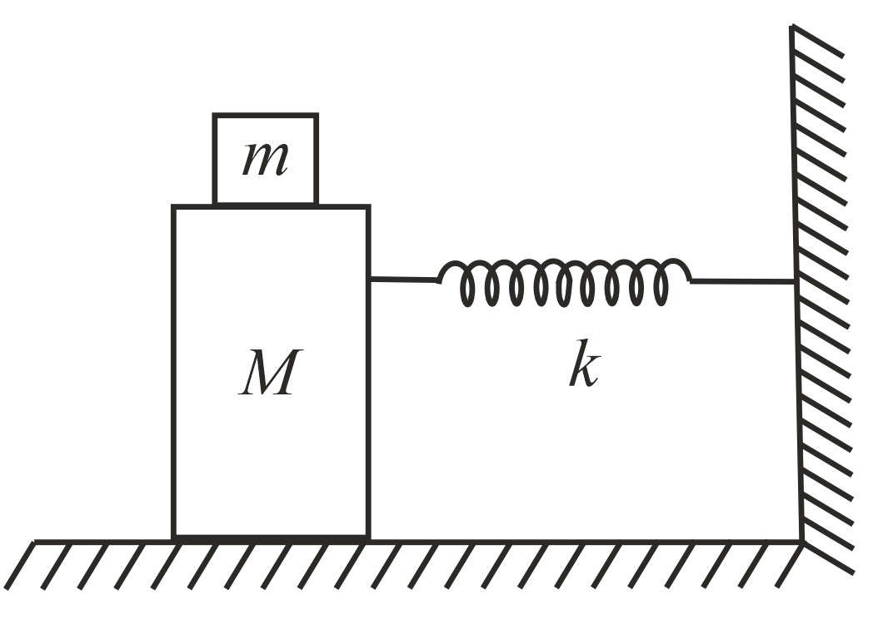
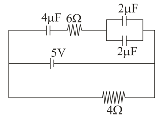
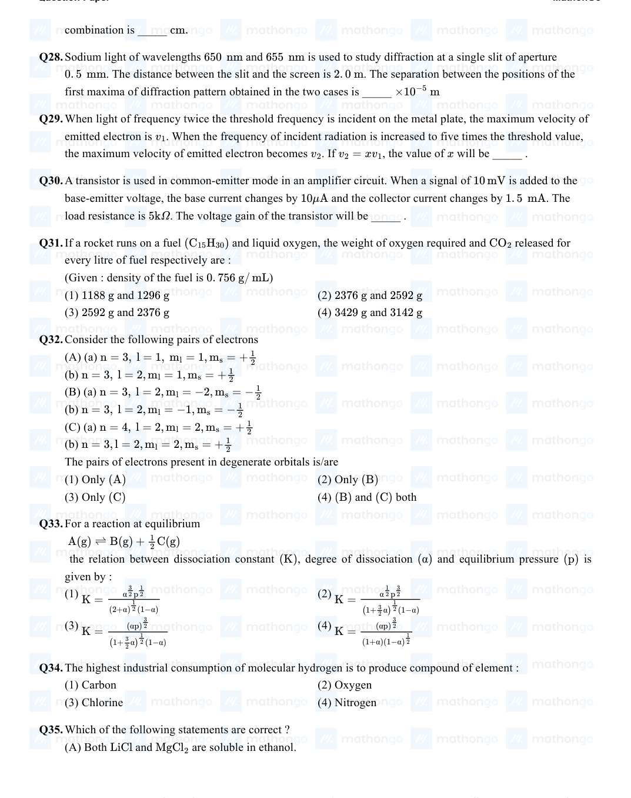
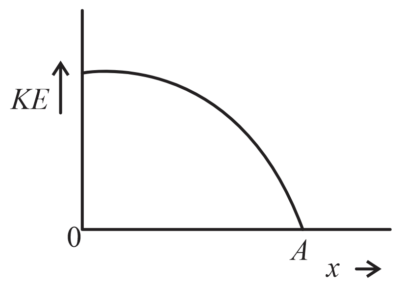

⚡ Oscillations
69
Total Questions
5
Years
3
Clusters
Question Clusters
PHY-OSCILLAT-SHM_KINEMATICS
Oscillations: SHM Displacement, Velocity & Acceleration
PHY-OSCILLAT-SIMPLE_PENDULUM
Oscillations: Simple & Compound Pendulum
PHY-OSCILLAT-SPRING_MASS_SYSTEMS
Oscillations: Spring-Mass Oscillations & Combinations
Year-wise Frequency
| Year | Questions | Frequency |
|---|---|---|
| 2021 | 27 | |
| 2022 | 8 | |
| 2023 | 17 | |
| 2024 | 16 | |
| 2025 | 1 |
Questions
Showing first 50 of 69 questions.
Q10 (2021 Shift 2)
A mass of is connected to a spring. The potential energy curve of the simple harmonic motion executed 5 kg by the system is shown in the figure. A simple pendulum of length 4 m has the same period of oscillation as the spring system. What is the value of acceleration due to gravity on the planet where these experiments are performed ?
PHY-2021-0101-S2-Q010
Q9 (2021 Shift 1)
Time period of a simple pendulum is T inside a lift when the lift is stationary. If the lift moves upwards with an acceleration g , the time period of pendulum will be : 2
PHY-2021-0101-S1-Q009
Q8 (2021 Shift 2)
The amplitude of a mass-spring system, which is executing simple harmonic motion decreases with time. If mass , Decay constant s−1 then how much time is required for the amplitude of the system to = 500 g = 20 g drop to half of its initial value? (ln 2 = 0. 693)
PHY-2021-0101-S2-Q008
Q25 (2021 Shift 1)
Consider two identical springs each of spring constant k and negligible mass compared to the mass M as shown. Fig. shows one of them and Fig. shows their series combination. The ratios of time period of 1 2 oscillation of the two SHM is Tb = √x, where value of x is ______. Ta (Round off to the Nearest Integer)
Answer:
2PHY-2021-0101-S1-Q025
Q1 (2021 Shift 1)
The time period of a simple pendulum is given by T = 2π√l . The measured value of the length of the g pendulum is 10 cm known to a 1 mm accuracy. The time for 200 oscillations of the pendulum is found to be 100 second using a clock of 1s resolution. The percentage accuracy in the determination of g using this pendulum is The value of to the nearest integer is:- x. x (1) 2% (2) 3% (3) 5% (4) 4%
Answer:
QuestionPHY-2021-0101-S1-Q001
Q26 (2021 Shift 1)
A particle performs simple harmonic motion with a period of 2 second. The time taken by the particle to cover a displacement equal to half of its amplitude from the mean position is 1 s. The value of to the nearest a a integer is
Answer:
6PHY-2021-0101-S1-Q026
Q11 (2021 Shift 2)
The function of time representing a simple harmonic motion with a period of π is : ω
PHY-2021-0101-S2-Q011
Q13 (2021 Shift 2)
A particle is making simple harmonic motion along the X -axis. If at a distances x1 and x2 from the mean position the velocities of the particle are and , respectively. The time period of its oscillation is given as: v1 v2
PHY-2021-0101-S2-Q013
Q8 (2021 Shift 1)
T0 is the time period of a simple pendulum at a place. If the length of the pendulum is reduced to 16 1 times of its initial value, the modified time period is
PHY-2021-0101-S1-Q008
Q22 (2021 Shift 1)
Three students S1, S2 and S3 perform an experiment for determining the acceleration due to gravity (g) using a simple pendulum. They use different lengths of pendulum and record time for different number of oscillations. The observations are as shown in the table. Student No. Length of pendulum Number of oscillations Total time for Time (cm) (n) n oscillations period (s) 1. 64. 0 8 128. 0 16. 0 2. 64. 0 4 64. 0 16. 0 3. 20. 0 4 36. 0 9. 0 (Least count of length = 0. 1 m , least count for time = 0. 1 s ) If E1, E2 and E3 are the percentage errors in g for students 1, 2 and 3 , respectively, then the minimum percentage error is obtained by student no .
Answer:
1PHY-2021-0101-S1-Q022
Q11 (2021 Shift 1)
In the given figure, a mass 𝑀 is attached to a horizontal spring which is fixed on one side to a rigid support. The spring constant of the spring is 𝑘. The mass oscillates on a frictionless surface with time period 𝑇 and amplitude 𝐴. When the mass is in equilibrium position, as shown in the figure, another mass 𝑚 is gently fixed upon it. The new amplitude of oscillation will be:

PHY-2021-0101-S1-Q011
Q1 (2021 Shift 2)
The period of oscillation of a simple pendulum is T = 2π√L . Measured value of L is 1. 0 m from meter scale g having a minimum division of 1 mm and time of one complete oscillation is 1. 95 s measured from stopwatch of 0. 01 s resolution. The percentage error in the determination of ′g′ will be:
PHY-2021-0101-S2-Q001
Q10 (2021 Shift 2)
Two electrons each are fixed at a distance 2d. A third charge proton placed at the midpoint is displaced slightly by a distance x(x ≪d) perpendicular to the line joining the two fixed charges. Proton will execute simple harmonic motion having angular frequency: ( mass of charged particle) m =
PHY-2021-0101-S2-Q010
Q6 (2021 Shift 2)
Two identical springs of spring constant 2k are attached to a block of mass m and to fixed support (see figure). When the mass is displaced from equilibrium position on either side, it executes simple harmonic motion. The time period of oscillations of this system is :
PHY-2021-0101-S2-Q006
Q7 (2021 Shift 2)
The point moves with a uniform speed along the circumference of a circle of radius and covers in A 0. 36 m 30° 0. 1 s . The perpendicular projection P from A on the diameter MN represents the simple harmonic motion of P . The restoration force per unit mass when P touches M will be :
PHY-2021-0101-S2-Q007
Q8 (2021 Shift 2)
Y = A sin(ωt + ϕ0) is the time-displacement equation of a SHM. At t = 0 the displacement of the particle is Y = A and it is moving along negative x -direction. Then the initial phase angle ϕ0 will be:
PHY-2021-0101-S2-Q008
Q1 (2021 Shift 2)
If the length of the pendulum in pendulum clock increases by 0. 1% , then the error in time per day is:
PHY-2021-0101-S2-Q001
Q23 (2021 Shift 2)
Two simple harmonic motions are represented by the equations x1 = 5 sin(2πt + π 4 ) and 5√2(sin 2πt). x2 = 2πt + cos The amplitude of the second motion is _____ times the amplitude in the first motion.
Answer:
2PHY-2021-0101-S2-Q023
Q11 (2021 Shift 1)
Assume that a tunnel is dug along a chord of the earth, at a perpendicular distance R from the earth's centre, 2 where R is the radius of the earth. The wall of the tunnel is frictionless. If a particle is released in this tunnel, it will execute a simple harmonic motion with a time period:
PHY-2021-0101-S1-Q011
Q10 (2021 Shift 2)
Given below are two statements: Statement I : A second's pendulum has a time period of 1 second. Statement II : It takes precisely one second to move between the two extreme positions. In the light of the above statements, choose the correct answer from the options given below
PHY-2021-0101-S2-Q010
Q25 (2021 Shift 2)
Time period of a simple pendulum is T . The time taken to complete 5 8 oscillations starting from mean position is α T . The value of α is ______ . 12
Answer:
7PHY-2021-0101-S2-Q025
Q9 (2021 Shift 1)
The variation of displacement with time of a particle executing free simple harmonic motion is shown in the figure. The potential energy U(x) versus time (t) plot of the particle is correctly shown in figure:

PHY-2021-0101-S1-Q009
Q24 (2021 Shift 2)
Two simple harmonic motion, are represented by the equations y1 = 10 sin(3πt + π ); y2 = 5(sin 3πt + √3 cos 3πt) 3 Ratio of amplitude of y1 to y2 = x : 1 . The value of x is
Answer:
1PHY-2021-0101-S2-Q024
Q10 (2021 Shift 1)
A particle starts executing simple harmonic motion (SHM) of amplitude and total energy E. At any instant, a its kinetic energy is 3E , then its displacement y is given by: 4
PHY-2021-0101-S1-Q010
Q11 (2021 Shift 2)
An object of mass 0. 5 kg is executing simple harmonic motion. It amplitude is 5 cm and time period (T) is T 0. 2 s . What will be the potential energy of the object at an instant t = 4 s starting from mean position. Assume that the initial phase of the oscillation is zero.
PHY-2021-0101-S2-Q011
Q25 (2021 Shift 2)
A particle executes simple harmonic motion represented by displacement function as x(t) = sin(ωt + ϕ) . If A the position and velocity of the particle at t = 0 s are 2 cm and 2ω cm s−1 respectively, then its amplitude is x√2 cm where the value of x is
Answer:
2PHY-2021-0101-S2-Q025
Q10 (2021 Shift 2)
A bob of mass 𝑚 suspended by a thread of length ℓ undergoes simple harmonic oscillations with time period 𝑇. If the bob is immersed in a liquid that has density 1 times that of the bob and the length of the thread is 4 increased by 1 𝑟𝑑 of the original length, then the time period of the simple harmonic oscillations will be: 3
PHY-2021-0101-S2-Q010
Q29 (2022 Shift 1)
When light of frequency twice the threshold frequency is incident on the metal plate, the maximum velocity of emitted electron is v1 . When the frequency of incident radiation is increased to five times the threshold value, the maximum velocity of emitted electron becomes v2 . If v2 = xv1 , the value of x will be _____ .

Answer:
2PHY-2022-0101-S1-Q029
Q10 (2022 Shift 1)
The displacement of simple harmonic oscillator after 3 seconds starting from its mean position is equal to half of its amplitude. The time period of harmonic motion is
PHY-2022-0101-S1-Q010
Q11 (2022 Shift 2)
The equation of a particle executing simple harmonic motion is given by x = sin π(t + 1 ) m . At t = 1 s , the 3 speed of particle will be (Given: π = 3. 14 )
PHY-2022-0101-S2-Q011
Q17 (2022 Shift 2)
A convex lens has power P . It is cut into two halves along its principal axis. Further one piece (out of the two halves) is cut into two halves perpendicular to the principal axis (as shown in figures). Choose the incorrect option for the reported pieces.
PHY-2022-0101-S2-Q017
Q24 (2022 Shift 2)
A particle executes simple harmonic motion. Its amplitude is 8 cm and time period is 6 s . The time it will take to travel from its position of maximum displacement to the point corresponding to half of its amplitude, is _____ s
Answer:
1PHY-2022-0101-S2-Q024
Q22 (2022 Shift 1)
A pendulum is suspended by a string of length 250 cm . The mass of the bob of the pendulum is 200 g . The bob is pulled aside until the string is at 60° with vertical as shown in the figure. After releasing the bob, the maximum velocity attained by the bob will be _____ m s−1 . (if g = 10 m s−2 )
Answer:
5PHY-2022-0101-S1-Q022
Q23 (2022 Shift 1)
A body is performing simple harmonic with an amplitude of 10 cm . The velocity of the body was tripled by air Jet when it is at 5 cm from its mean position. The new amplitude of vibration is √x cm . The value of x is _____ .
Answer:
700PHY-2022-0101-S1-Q023
Q10 (2022 Shift 2)
The motion of a simple pendulum executing S.H.M. is represented by the following equation y = A sin(πt + ϕ) , where time is measured in second. The length of pendulum is
PHY-2022-0101-S2-Q010
Q4 (2023 Shift 1)
A mass 𝑚 is attached to two springs as shown in figure. The spring constants of two springs are 𝐾1 and 𝐾2 . For the frictionless surface, the time period of oscillation of mass 𝑚 is

PHY-2023-0101-S1-Q004
Q13 (2023 Shift 2)
A simple pendulum with length 100 cm and bob of mass 250 g is executing S.H.M of amplitude 10 cm . The maximum tension in the string is found to be x N . The value of x is _____. 40
PHY-2023-0101-S2-Q013
Q26 (2023 Shift 2)
Given below are two statements: one is labelled as Assertion A and the other is labelled as Reason R Assertion A: The phase difference of two light waves change if they travel through different media having same thickness, but different indices of refraction. Reason R: The wavelengths of waves are different in different media. In the light of the above statements, choose the most appropriate answer from the options given below (1) Both A and R are correct but R is NOT the (2) A is not correct but R is correct correct explanation of A (3) A is correct but R is not correct (4) Both A and R are correct and R is the correct explanation of A o o

Answer:
5PHY-2023-0101-S2-Q026
Q24 (2023 Shift 2)
A rectangular block of mass 5 kg attached to a horizontal spiral spring executes simple harmonic motion of amplitude 1 m and time period 3 . 14 s. The maximum force exerted by spring on block is ___ N.
Answer:
20PHY-2023-0101-S2-Q024
Q9 (2023 Shift 1)
The variation of kinetic energy (KE) of a particle executing simple harmonic motion with the displacement (𝑥) starting from mean position to extreme position (𝐴) is given by

PHY-2023-0101-S1-Q009
Q14 (2023 Shift 1)
A particle is executing simple harmonic motion (SHM). The ratio of potential energy and kinetic energy of the particle when its displacement is half of its amplitude will be
PHY-2023-0101-S1-Q014
Q10 (2023 Shift 1)
In a linear Simple Harmonic Motion (SHM)
PHY-2023-0101-S1-Q010
Q25 (2023 Shift 1)
A block of mass 2 kg is attached with two identical springs of spring constant 20 N m-1 each. The block is placed on a frictionless surface and the ends of the springs are attached to rigid supports (see figure). When the mass is displaced from its equilibrium position, it executes a simple harmonic motion. The time period of 𝜋 oscillation is in SI unit. The value of 𝑋 is______. √𝑋 𝑞
Answer:
5PHY-2023-0101-S1-Q025
Q8 (2023 Shift 1)
Assume that the earth is a solid sphere of uniform density and a tunnel is dug along its diameter throughout the earth. It is found that when a particle is released in this tunnel, it executes a simple harmonic motion. The mass of the particle is . The time period of the motion of the particle will be (approximately) 100 g (take g = 10 ms−2 , radius of earth = 6400 km )
PHY-2023-0101-S1-Q008
Q9 (2023 Shift 1)
T is the time period of simple pendulum on the earth's surface. Its time period becomes xT when taken to a height R (equal to earth's radius) above the earth's surface. Then, the value of x will be:
PHY-2023-0101-S1-Q009
Q14 (2023 Shift 1)
The distance between two consecutive points with phase difference of 60° in a wave of frequency 500 Hz is 6. 0 m . The velocity with which wave is travelling is ______ km s−1 .
PHY-2023-0101-S1-Q014
Q14 (2023 Shift 2)
A particle executes simple harmonic motion between x = –A and x = +A . If time taken by particle to go from = 0 to A is 2 s ; then time taken by particle in going from = A to is: x 2 x 2 A
PHY-2023-0101-S2-Q014
Q13 (2023 Shift 1)
Two simple harmonic waves having equal amplitudes of 8 cm and equal frequency of 10 Hz are moving along the same direction. The resultant amplitude is also . The phase difference between the individual waves is 8 cm _____ degree.
PHY-2023-0101-S1-Q013
Q14 (2023 Shift 2)
A particle of mass executes a simple harmonic motion under a periodic force . The 250 g F = (–25x) N particle attains a maximum speed of 4 m s−1 during its oscillation. The amplitude of the motion is ______ cm . 10–2 C–1
PHY-2023-0101-S2-Q014
Q13 (2023 Shift 2)
For a simple harmonic motion in a mass spring system shown, the surface is frictionless. When the mass of the block is 1 kg , the angular frequency is ω1 . When the mass block is 2 kg the angular frequency is ω2 . The ratio ω2 ω1 is :

PHY-2023-0101-S2-Q013